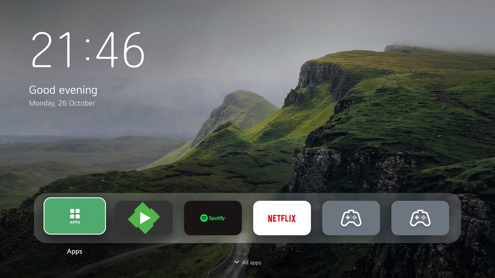
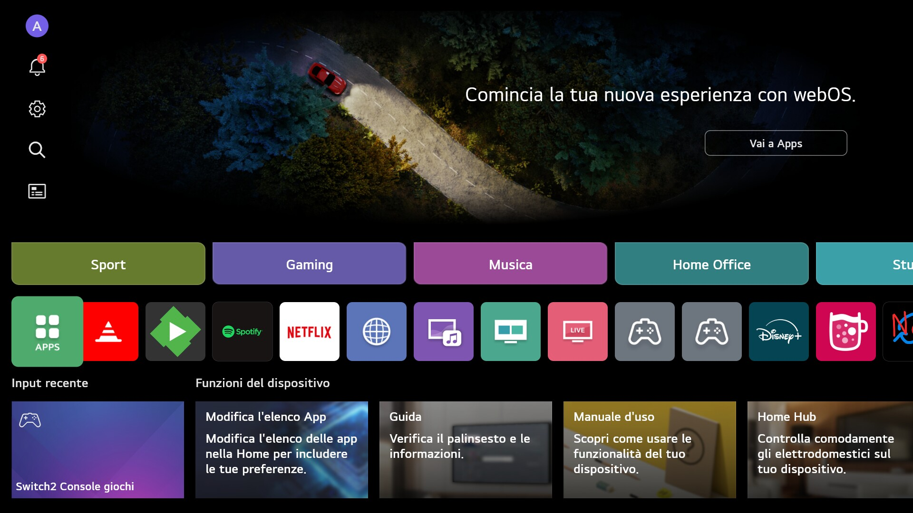

TV Home - before and after
LG's Home screen on webOS 10, and the same TV with TV Home. Drag the divider (or use the arrow keys).


LG's Home
TV Home
LG's Home screen on webOS 10, and the same TV with TV Home. Drag the divider (or use the arrow keys).

